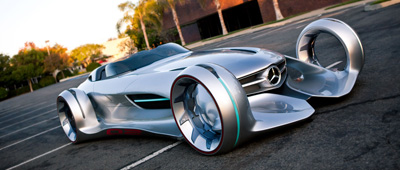

BIOS - Scherp getekende vormen.
De ogen rijden mee, en in de Bois beleven ze daar bijzonder veel plezier aan. Het scherp getekende design van zowel het interieur als
het exterieur is niet alleen een kwestie van goede smaak, maar is vooral toch een hedendaagse en nieuwe interpretatie van de vormgeving
die het krachtige en dynamische uiterlijk van de auto extra in de verf zet. De nieuwe designtaal van Prothero is jonger en frisser en
zet door sierlijke detailoplossingen krachtige accenten. Al op het eerste gezicht bestaat er geen twijfel over: De Bios is een echte
Prothero innovatie.
Details

AVATAR - De mooiste vorm van purisme.
De elegante vormen van een Prothero en de gespierde uitstraling van een sportauto. De horizontale lijnen aan de voorzijde van de nieuwe
Avatar stralen kracht en energie uit. De singleframe-grille is laag en breed met de Prothero-Draak elegant geïntegreerd. Kortom, deze
open tweezitter heeft een herkenbaar design. Ook binnenin is sprake van een karakteristieke ontwerpstijl, compleet met een tijdloze
uitstraling. Het conventionele instrumentarium is vervangen door de innovatieve Prothero virtual cockpit, die volledig op de bestuurder
is gericht.
Details
ESCAPE - De legende leeft.
Beleef de automobiele passie: De Escape behoort tot de meest indrukwekkende auto’s ter wereld. De naam staat bij Prothero voor elegantie,
sportief rijden en innovatieve techniek. Deze traditie wordt ook voortgezet door de huidige generatie van prototypes. Het vooruitstrevende
design inspireert en laat ruimte voor visie. De grootse vormgeving, de kwaliteitsvolle materialen en een minutieuze ambachtelijke afwerking
maken van de Escape een stijlbepalend kunstwerk.
Details